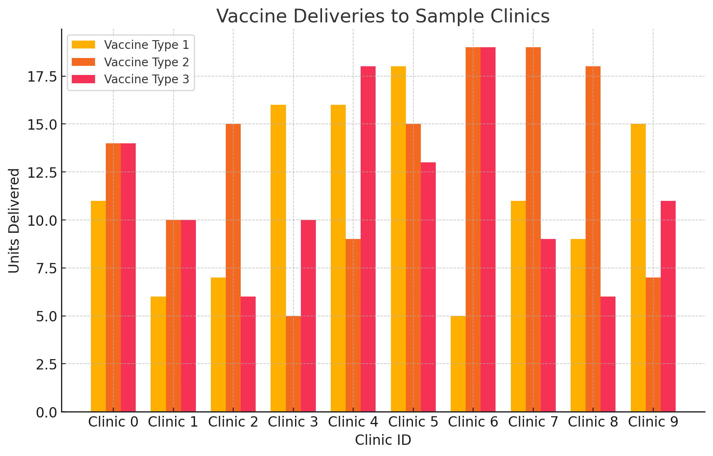
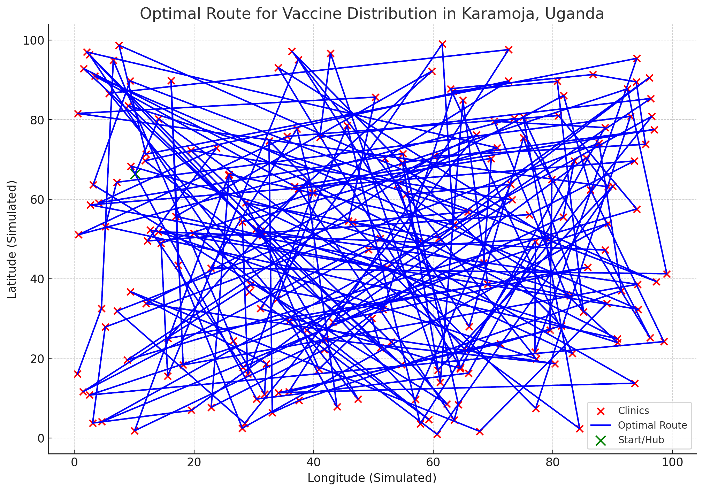

Efficient vaccine distribution is crucial to prevent disease outbreaks, particularly in remote and underserved areas of Africa. However, regions with poor infrastructure, limited healthcare access, and difficult terrain pose significant challenges. This report presents an optimized vaccine distribution model that combines aspects of the Traveling Salesman Problem (TSP) and supply chain optimization. Using Gurobi for mathematical modeling, we aim to minimize transportation costs and ensure vaccines are delivered within safety constraints (e.g., cooling time limits) to clinics across remote regions.
Studies on healthcare logistics in rural areas emphasize the challenges of delivering perishable goods, like vaccines, to regions with poor road access and minimal infrastructure. According to WHO (2020), Africa struggles with inadequate supply chains that result in vaccination delays and increased child mortality rates. Research by Simchi-Levi et al. (2019) shows that optimization models such as the Vehicle Routing Problem (VRP) and TSP are effective in reducing logistics costs while maintaining service quality.
The following are key challenges identified from the literature:
This project builds on these insights by creating a robust vaccine distribution model suitable for remote regions of Africa, specifically targeting the Karamoja region of Uganda.
Karamoja is located in northeastern Uganda. It is a remote, arid region with poor road infrastructure and limited healthcare facilities. The population mainly consists of pastoralists, with frequent outbreaks of infectious diseases such as measles and cholera. Challenges include seasonal rains making roads impassable, while limited fuel availability complicates logistics.
We developed an optimization model to solve a vaccine distribution problem using:
The Gurobi model provided an optimal route for the single vehicle, considering all constraints. Below are the key results.
I’ve generated a map visualization showing the optimal route across 200 clinics.
 The visualization above depicts the optimal route for vaccine distribution across 200 clinics in Karamoja, Uganda. Key observations:
Below are additional performance metrics from the optimization model:
Further enhancements could include: